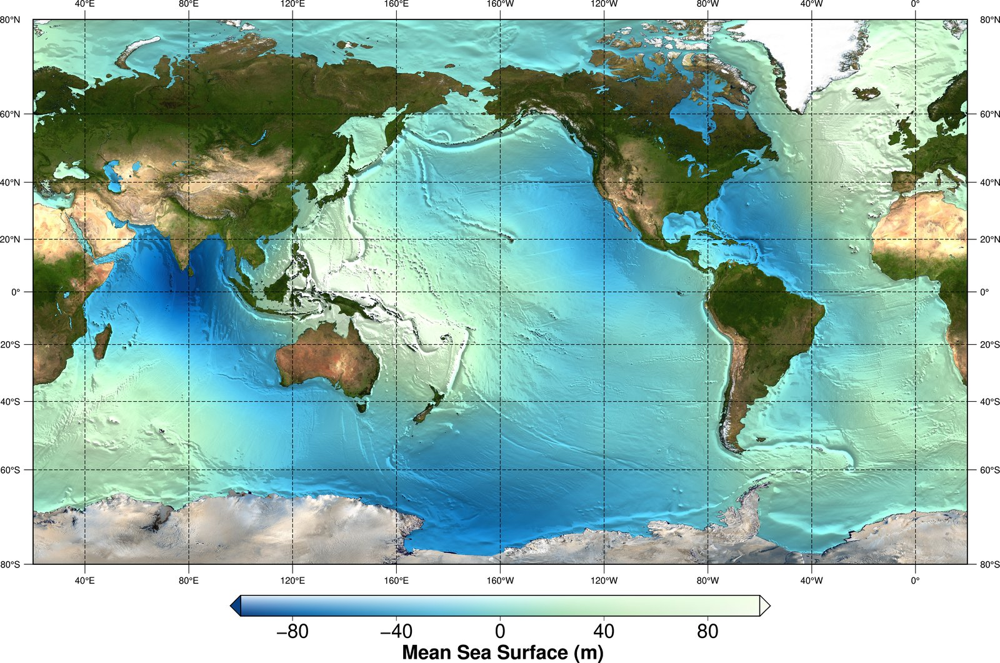
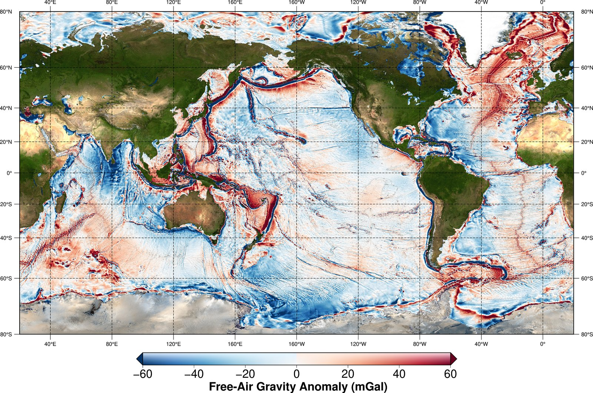
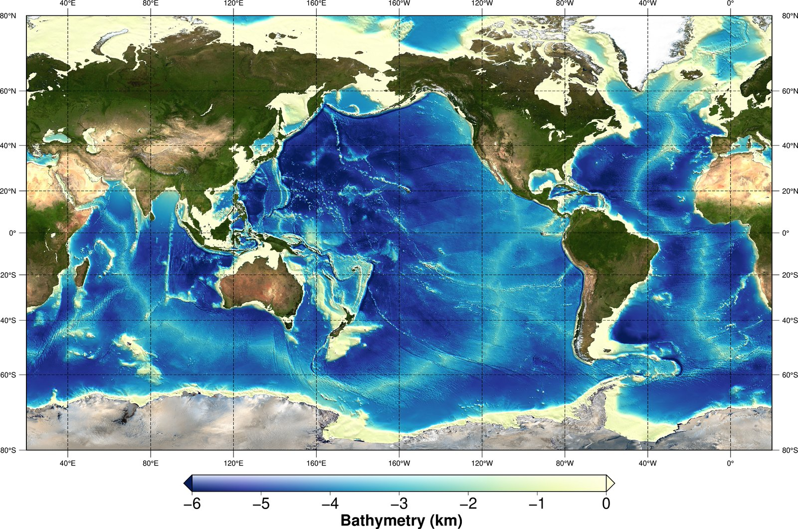
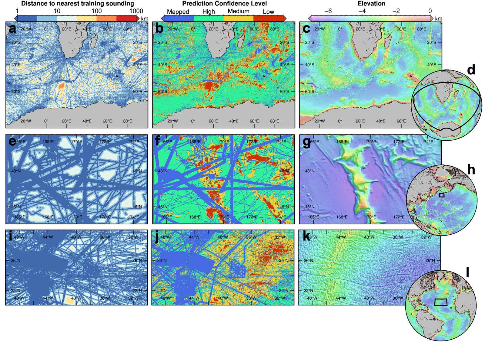

Research
Overview of my research interests and current and past projects.
Overview of my research interests and current and past projects.
Satellite altimeters measure the height of the sea surface from space. Conventional altimeters observe a narrow line directly below the satellite (nadir), while the SWOT mission, launched in 2022, maps a two-dimensional swath of the ocean surface in a single pass.
My work centres on processing and evaluating SWOT data for geodesy, for example assessing how well SWOT observes the static ocean topography (GRL 2025), alongside data from missions such as CryoSat-2, ICESat-2, SARAL/AltiKa and Sentinel-3/6.
The mean sea surface and the marine gravity field are fundamental reference fields for both geodesy and oceanography. I developed the DTU25 mean sea surface, which incorporates SWOT observations (ESSD 2026; dataset). I am now working on DTU26GRA, a new global marine gravity field from SWOT with spatially adaptive filtering.


Only around a quarter of the seafloor has been mapped directly by ships. Elsewhere, ocean depth is predicted from marine gravity derived from satellite altimetry. The higher resolution of SWOT reveals smaller seamounts and seafloor features than before. Together with David Sandwell's group at Scripps Institution of Oceanography, I work on predicting global bathymetry from SWOT-based gravity.

Converting gravity into ocean depth has traditionally relied on linear inversion. I develop machine-learning methods that learn this relationship from ship soundings and quantify how reliable the predictions are away from mapped areas (Paper 1 and Paper 2, JGR Solid Earth 2026). In 2026 I extended this work towards joint gravity inversion during a research stay at NYCU, Taiwan.
